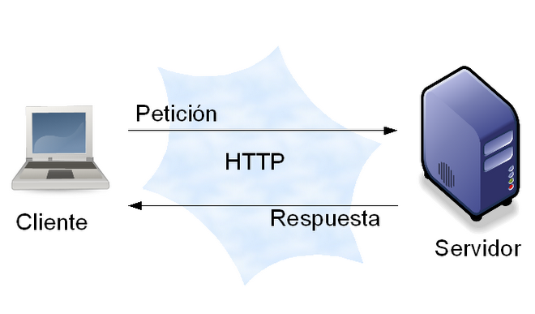

Seccion de imagenes representativas del protocolo
En esta seccion mostraremos imagenes representativas del protocolo HTTP


Plantear un caso de uso de encriptación unidireccional
Se plantearon dos casos:
¿Cuáles son las ventajas y las desventajas de la encriptación simétrica?
La encriptación simétrica es rápida y eficiente, ideal para encriptar grandes volúmenes de datos y en aplicaciones en tiempo real, además de ser más simple de implementar y consumir menos recursos. Sin embargo, presenta desafíos significativos en la gestión y distribución segura de claves, siendo compleja en entornos grandes y escalables. La seguridad del sistema depende completamente de la protección de la clave, y si esta es comprometida, todos los datos encriptados con ella estarán en riesgo. Además, no proporciona autenticación, por lo que se necesita un mecanismo adicional para garantizar la legitimidad de los mensajes.
¿Como encriptaríamos para obtener confidencialidad en la transferencia de datos?
Utilizariamos la criptografía bidireccional asimétrica. Se basa en la encriptación de un mensaje con una clave y la des-encriptación con otra diferente. Una de dichas claves (cualquiera de ellas debe ser privada y la otra pública). Si se encripta con la clave pública del receptor para que este a su vez desencripte con su privada se logra confidencialidad.
¿Como encriptaríamos para autenticar un documento usando firma electrónica?
Hash encriptado con clave RSA privada del emisor: Usando esta firma se garantiza autenticidad del documento. La firma es el producto encriptado asimétricamente con privada del origen del hash md5 del documento (no de todo el documento). Cualquier software de firma electrónica tiene previamente definidos y disponibles la Clave privada (.key) y la clave pública firmada por CA (.cert) Si en el medio alguien extrae el documento y lo modifica, jamas va a poder generar una una firma compatible con la firma original ya que no dispone de la key privada original.
¿Que tipo de encriptación se usa en la WEB?
HTTPS (Hypertext Transfer Protocol Secure): Es la versión segura de HTTP, utilizando TLS/SSL para encriptar el tráfico web. HTTPS asegura que la información transmitida entre el navegador y el servidor esté cifrada.
En esta seccion mostraremos imagenes representativas del protocolo HTTP